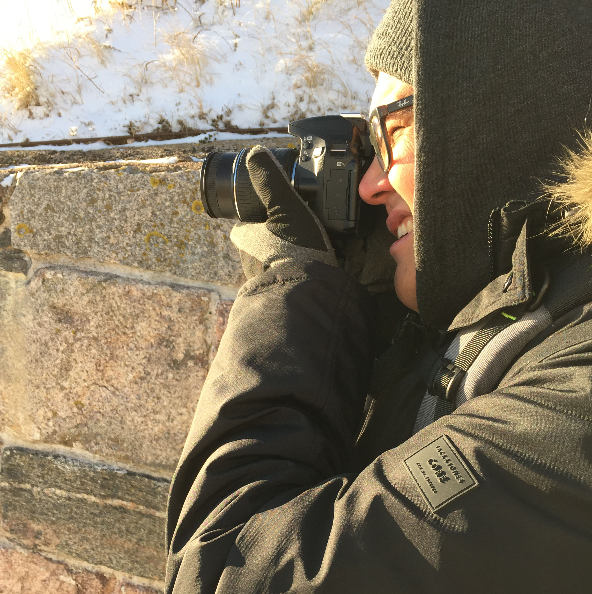

On That Midnight Train to Georgia
October 22, 2016 // Tagged in: Photography
I've seen a sign.
Here it is:
Now, on to business...
It was a hell of a week. Aside from that, I got some cool pictures.
A friend of mine is making a train set, HO scale, and I find it to be quite interesting. Not only is it a hobby of skill and detail, but also that of patience.
Less Talk, More Photos
 and finally, my favorite.
and finally, my favorite.
These are just a few of the pictures, but it was an entertaining little detour during the middle of a hectic week to remind me that there's much more to life than work.
Until next time.
